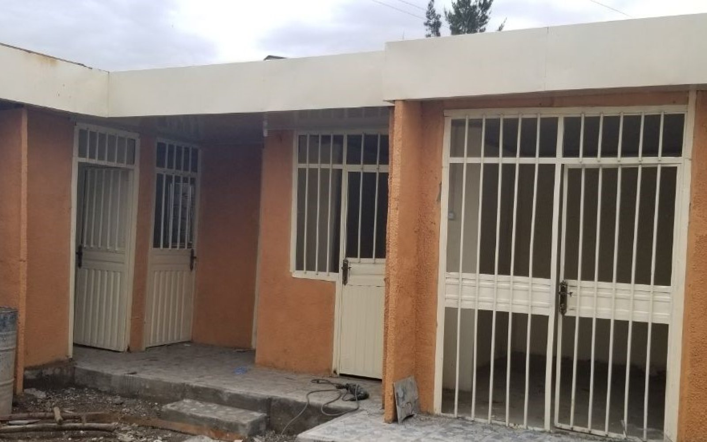
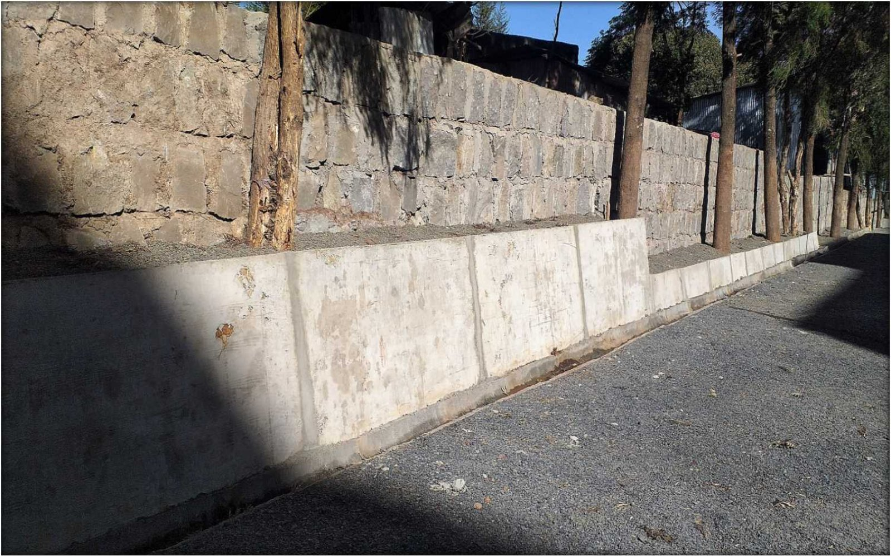
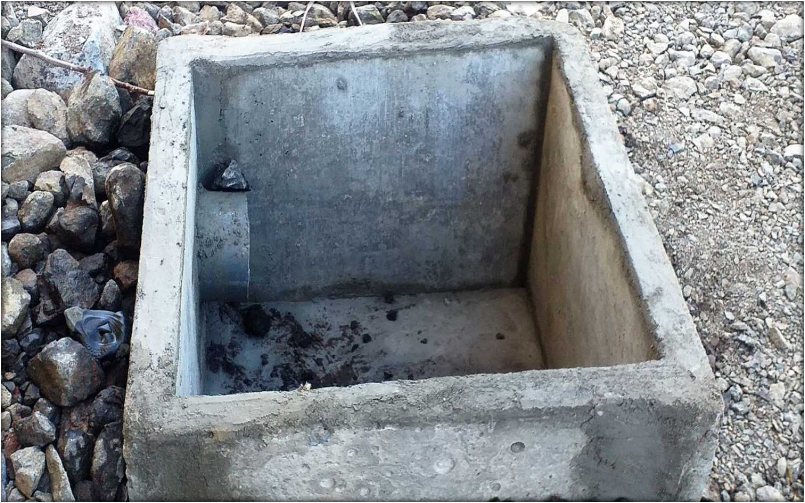
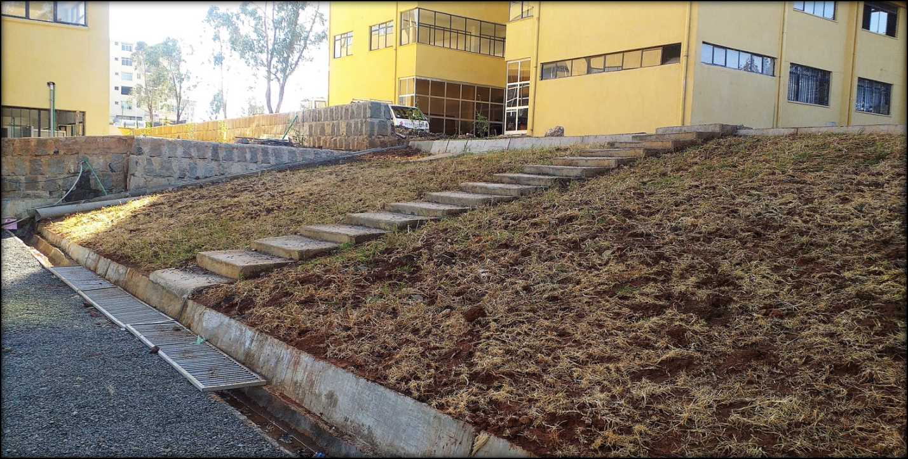
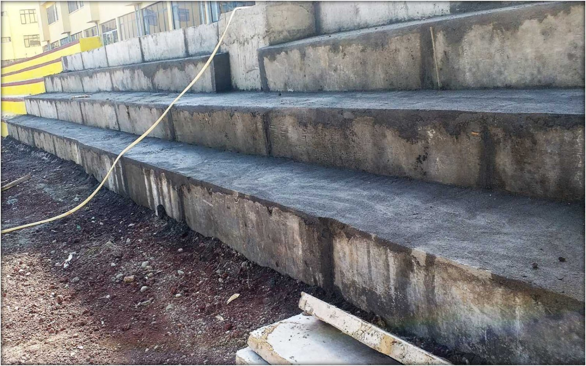
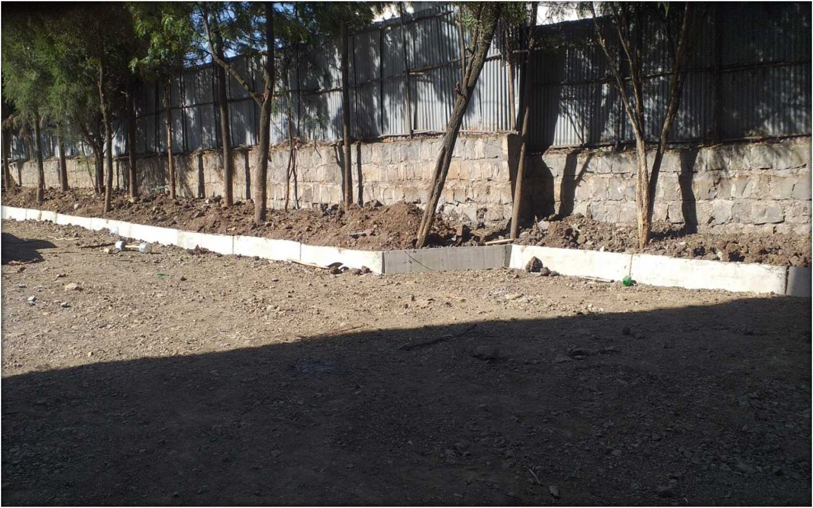

Compliant Precast Wall Panels
We manufacture precast concrete wall panels in accordance with Ethiopian Standards: ES 6727-1-2021, ES6727-2-2021, and ES-6910-2021. Ideal for durable and fast prefab housing.
Innovative Jute Fiber Concrete
Our panels include chemically treated jute fiber (Kacha), which boosts compressive strength by 60% and flexural strength by 66% in RCC structures.
Cost-Effective Building
- Eliminates need for masonry foundation, grade beams, columns, and hollow blocks
- 60% cheaper than traditional villa construction
- Can be completed in under three weeks
- Fully dismantlable and reassemblable at new sites
Applications of Precast Panels
Affordable House

Beautifully designed, energy-efficient prefab homes built with cost in mind.
Retaining Wall

Engineered for strength and long-term performance in erosion control and landscaping.
Manhole

Durable, modular components for underground access structures.
Staircase

Safe, rapid-install precast stair systems for homes and infrastructure.
Staircase Wall

Load-bearing, aesthetically consistent walls for stair assemblies.
Curbstone

Precast curbs for urban infrastructure with strength and design flexibility.
Explore Our Technology
Our panel technology offers versatility with customizable dimensions to suit diverse building needs. Benefit from factory-controlled quality, speed, and cost-efficiency today.
Frequently Asked Questions
- Can the houses be relocated? Yes, all structures are designed for disassembly and relocation without damage.
- What is the expected lifespan of the panels? Our panels are designed for long-term use with minimal maintenance.
- How soon can a home be ready? Standard prefab homes can be completed in three weeks or less.
Contact for Custom Solutions
Want to learn more about our prefab solutions or request a quote?
Contact Us